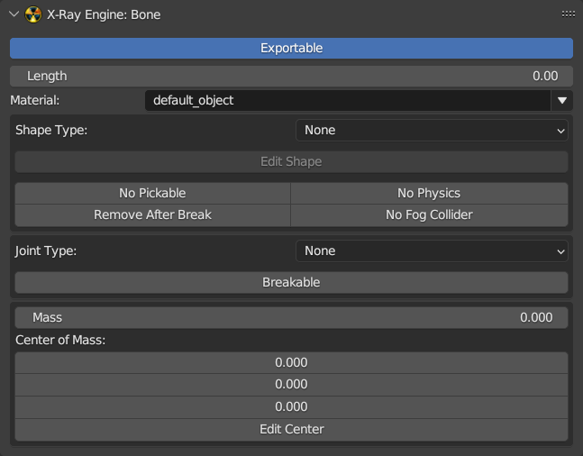

X-Ray Engine: Bone

About
This page describes the X-Ray Engine: Bone panel. Some parameters from this panel are displayed only for certain joint types (Joint Type parameter)
Location
Properties window > Bone tab
Parameters
Exportable
If on, the bone will be exportable and will be saved when exporting to *.object and *.ogf. If off, it will not be used during export. Usually this parameter should be turned off for additional rig bones, for example, for bones of inverse kinematics. This parameter should be turned on for deforming bones or for bones that must be in the skeleton.
Material
Bone Shape Material
Length
TODO
Shape Type
Shape Type
- None - No Shape
- Box - Parallelepiped
- Cylinder - Cylinder
- Sphere - Sphere
- Custom - Customizable type which is specified using the identifier in the Shape ID parameter
Shape ID
Identifier for Custom Shape
No Pickable
Excludes a bone from collision handling
No Physics
Excludes physics processing for bone
Remove After Break
Allows removal of bone after an object has been destroyed
No Fog Collider
Bone won’t interact with a voluminous smoke
Joint Type
- None - No joint
- Rigid - Rigid Joint
- Cloth - Cloth Joint
- Joint - Universal Joint
- Wheel - Wheel Joint
- Slider - Sliding Joint
- Custom - Custom type which is specified using the identifier in the Joint ID parameter
Joint ID
Identifier for Custom joint
Breakable
Allows bone to be breakable
Force
Threshold breaking force
Torque
Threshold fracture torque
Friction
Shape friction
Spring
Shape spring
Damping
Shape damping
Limit X/Y/Z: Min/Max
Rotation limits for bones with type Joint. These are set using the minimum and maximum rotation angle.
Limit X/Y/Z: Spring/Damping
Spring and damping for bones with Joint type.
Slide Z: Spring/Damping
Spring and damping during sliding for Slider type bones.
Rotate Z: Spring/Damping
Spring and damping during rotation for Slider type bones.
Steer: Min/Max
Amplitude of rotation of the front wheels of the vehicle while turning the steering wheel. Set the minimum and maximum angle.
Slide Z: Min/Max
Sliding limits for bones with Slider type. Specified by means of a minimum and maximum value, which is specified in meters.
Rotate Z: Min/Max
Rotation limits for bones with Slider type. Specified using the minimum and maximum rotation angle.
Mass
Bone shape mass value in kilograms.
Center of Mass
Shape center of mass coordinate.
Operators
Edit Shape
Turns on the mode of shape editing. After launching the operator, a shape object will be added to the scene and can be transformed. In the Properties window in the Object tab of the X-Ray Engine: Edit Helper panel, operators for working with a shape will be displayed.
Edit Center
Enables the center of mass editing mode. After you run the operator, a pacifier object will be added to the scene and can be moved. In the Properties window in the Object tab of the X-Ray Engine: Edit Helper panel, operators for working with the center of mass will be displayed